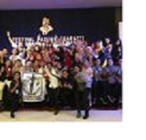

Persiapkan Lulusan, Universitas Jember Hadirkan Perusahaan Berskala Nasional
October 17, 2018
Pusat Pengembangan Karir yang dikoordinasikan oleh Lembaga Pengembangan, Pembelajaran dan Penjaminan Mutu (LP3M)
Universitas Jember menyelenggarakan Diskusi Interaktif bertema Kebutuhan Kompetensi dan Skill di Dunia Kerja Pada Perusahaan Berskala Nasional di Indonesia
dan menghadirkan narasumber yang merupakan perwakilan dari PT Telkomsel Kanwil Jawa-Bali, PT Indospring Tbk, dan PT Bank Syariah Mandiri, pada Rabu (17/10) di Aula lt. 2 LP3M Universitas Jember.

Berita Unej
Paduan Suara FH Universitas Jember Raih Dua Emas di Universitas Jenderal Soedirman
October 17, 2018
Unit Kegiatan Mahasiswa (UKM) Paduan Suara Fakultas Hukum (FH)
Universitas Jember meraih dua medali emas dalam ajang Festival Paduan Suara Gita Buana Soedirman III,
di kampus Universitas Jenderal Soedirman, Purwokerto (6-9/10). Raihan dua emas ini menjadi sejarah bagi arek-arek FH,
pasalnya ini kali pertama mereka memperoleh prestasi di ajang paduan suara di tingkat nasional.
Dua medali emas yang dibawa pulang ke Kampus Tegalboto adalah untuk kategori paduan suara tingkat dewasa, dan kategori paduan suara lagu rakyat (folklore).
Prestasi ini juga menjadi tambahan modal bagi UKM Paduan Suara FH untuk berkompetisi di berbagai lomba paduan suara di Indonesia.